Design BIM drawn over the Level 1 ceiling: desktop preview of the headset view
UNIVERSITY OF CALIFORNIA, BERKELEY Civil & Environmental Engineering
Interior Digital Twin: Research Progress
The BIM in the headset, on site and in VR, and asking the twin questions
PRESENTER
Yoonsung
Lab meeting · November 5, 2026
Three lines toward one twin
Interior Digital Twin · Lab meeting · Nov 5, 2026
2
2 met8 partial2 openFour “done when” criteria per line · status as of Nov 2, from the research dashboard
Level 1 is captured and modeled; Levels 2–3 are captured
Interior Digital Twin · Lab meeting · Nov 5, 2026
3
SCAN
LEVEL 1
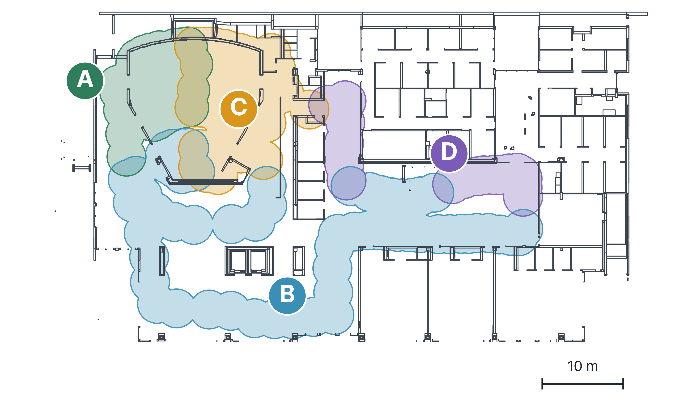
ABCDFour zones: 360° photos taken and a 3D model built for each
LEVEL 2● photo stations · not modeled yet
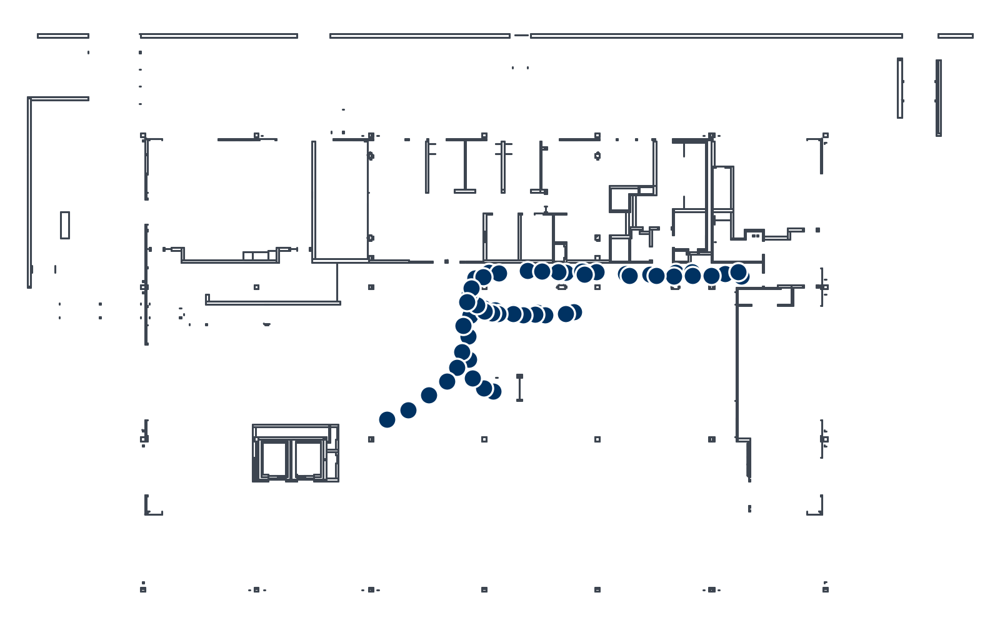
LEVEL 3● photo stations · not modeled yet
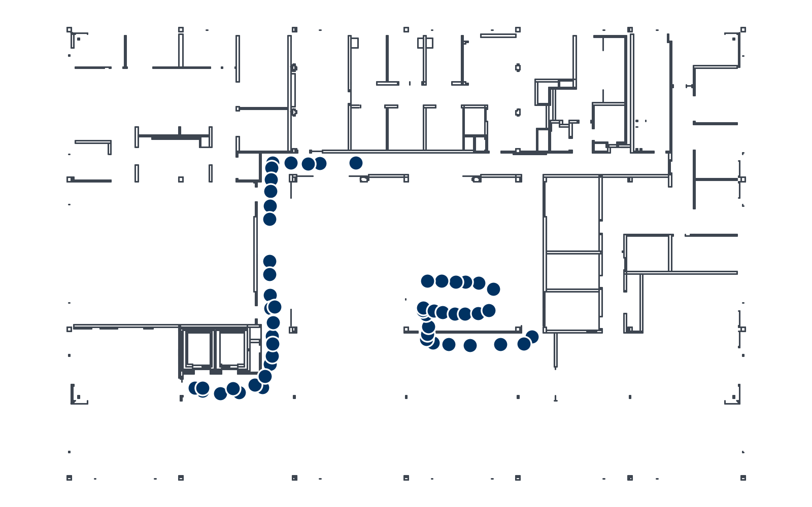
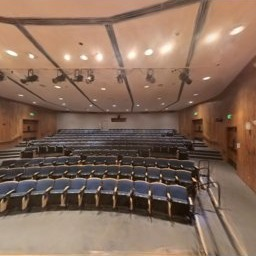
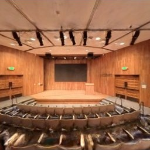
Level 1 zone A: two views of the 3D model
Two ways to see the BIM in the headset
Interior Digital Twin · Lab meeting · Nov 5, 2026
4
BIM · MR
Mixed realityon site, over the real building/mr
Ducts (blue) and sprinkler piping (red) over the real ceiling. Desktop preview: a 360° photo stands in for the camera view; model placed for the demo.
Runs in the Quest web browserPublic since Oct 30Not yet tried with the headset on site
VR overlayanywhere, inside the captured photos/vr
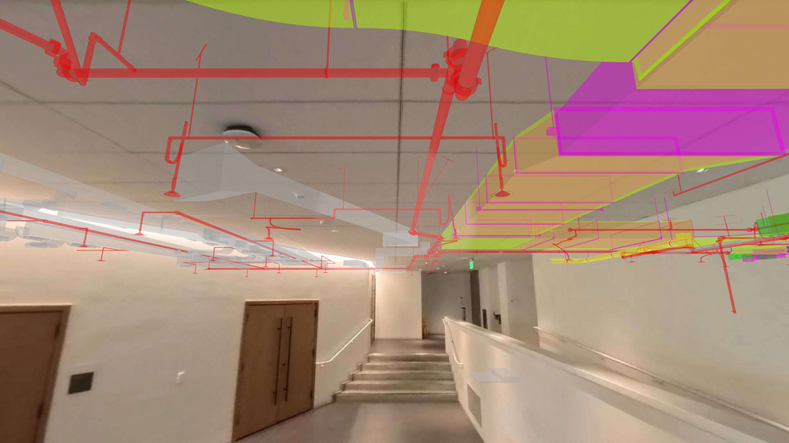
Inside a captured Level 1 photo, with the BIM aligned the same way as the web overlay: ductwork and sprinkler piping (red). Desktop preview.
Runs in the Quest web browserPublic since Oct 18Current version not yet tried on the headset
Same page, same design BIM. On site, mixed reality puts it over the real building; away from Grimes, the VR overlay lets you review it from inside the captured photos.
Lining the model up with the building: six stickers
Interior Digital Twin · Lab meeting · Nov 5, 2026
5
BIM · MR
To use the model while walking inside, it has to sit exactly on the real building. Otherwise the duct you see is not where the real duct is.
Real wallsDesign model (BIM)Sticker at a known BIM point
Why three stickers?
The model has coordinates; the headset does not know them. It only tracks its own movement from where it started.
One point fixes where, two fix the turn. With one sticker the model can still swing around it; the headset already knows which way is up.
The third checks the other two. If one aim is off, the distances disagree and the click is flagged.
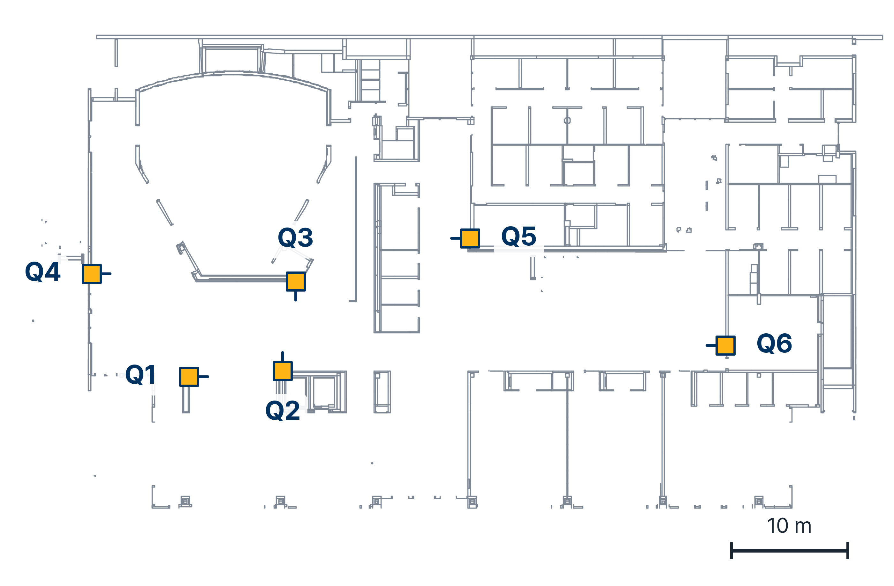
Six planned positions on Level 1, worked out from the BIM walls
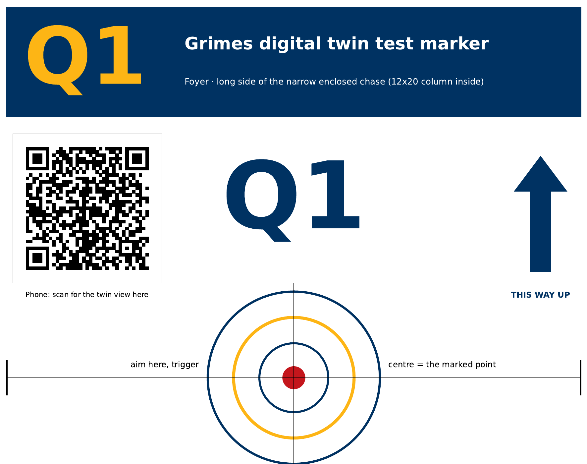
Sticker Q1, letter size. In the headset, aim at the crosshair and pull the trigger. The QR code opens the twin view of that spot on a phone.
Planned, not placed yet · first on-site test this week
AI · CONCEPT
Asking the twin
Bringing an AI agent into the model: point at anything in the building, ask, and get an answer you can check against the BIM.
1Look up2Nearby in 3D3Trace a system4Reason across sources
6
From simple to hard: four levels of question
Interior Digital Twin · Lab meeting · Nov 5, 2026
7
AI · CONCEPT
SIMPLE LOOK-UPMORE STEPS, MORE SOURCESREASONING ACROSS SOURCES
LEVEL 1
Look up
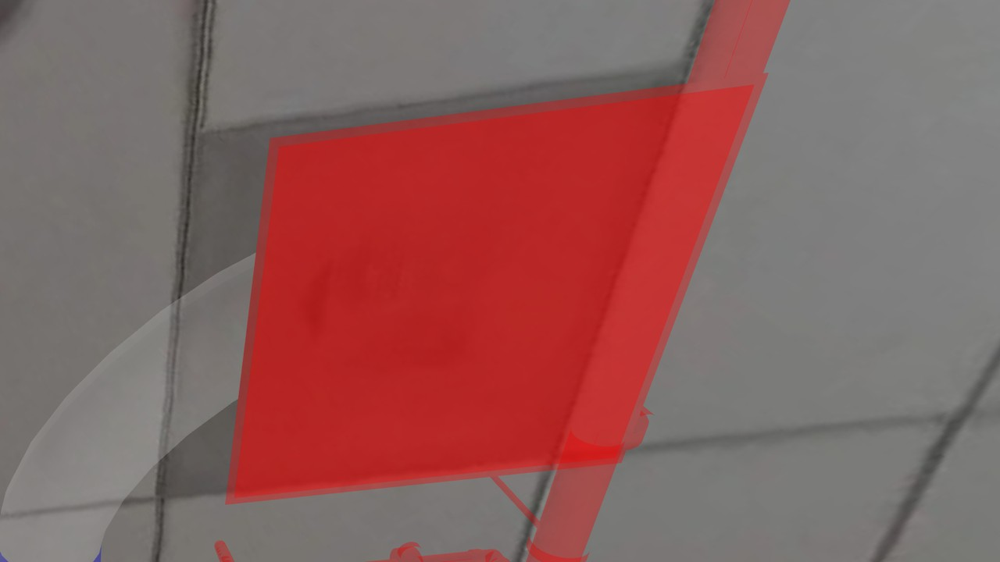
Supply diffuser · 388279
“What is this, and what room am I in?”
ANSWER
A 24×24 perforated supply diffuser on Level 1 (ID 388279). Room: probably Exhibit / Open Work Space 100-1, a best guess from nearby room-labelled equipment.
USESits own design record + 334 room labels
DESIGN BIMINFERRED
get_elementroom_of
LEVEL 2
Nearby in 3D
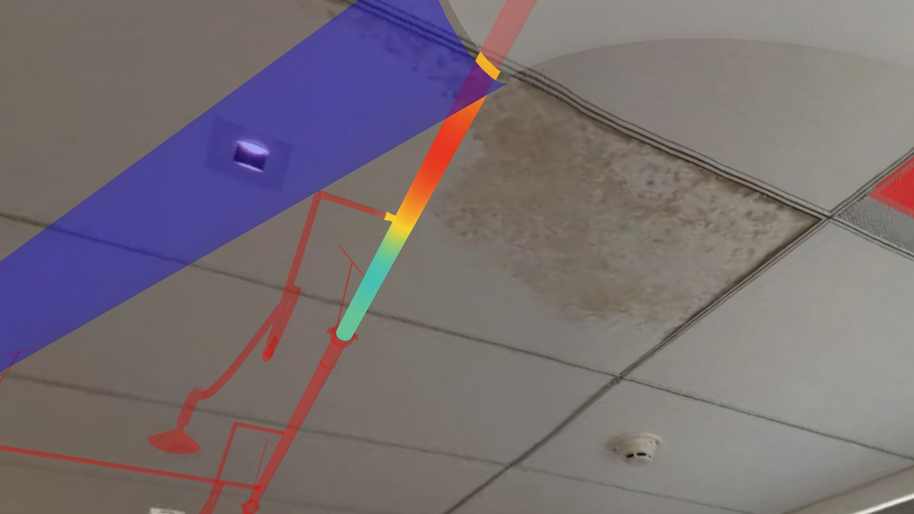
Spiral duct · 401514
Stained tile
“What’s above this ceiling tile, within 2 m?”
ANSWER
75 elements: 53 duct pieces, 10 sprinkler pipes and fittings, 6 beams, 4 conduit. Closest: spiral duct 401514, 0.1 m above the tile.
USESevery element box within 2 m above
GEOMETRY
elements_near
LEVEL 3
Trace a system
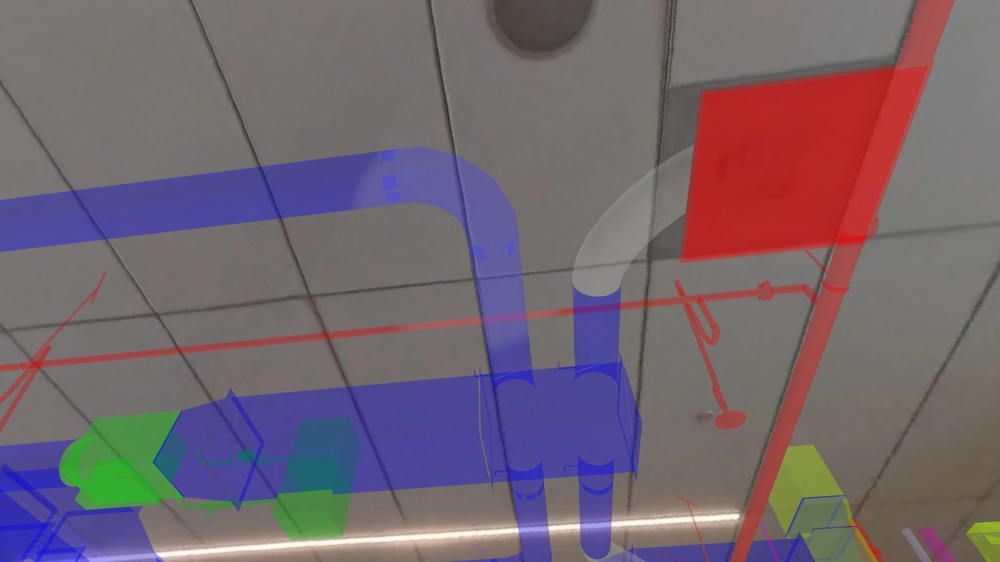
Diffuser · 388279
VAV box · 400766
“Where does the air from this vent come from?”
ANSWER
VAV box 400766 (Price SDV5, hot-water reheat), 11 steps along touching ducts (10 duct pieces between). Inferred from touching geometry: the model has no duct connections or flow direction.
USEStouching duct pieces, 11 steps
INFERRED
connected_runget_element
LEVEL 4
Reason across sources
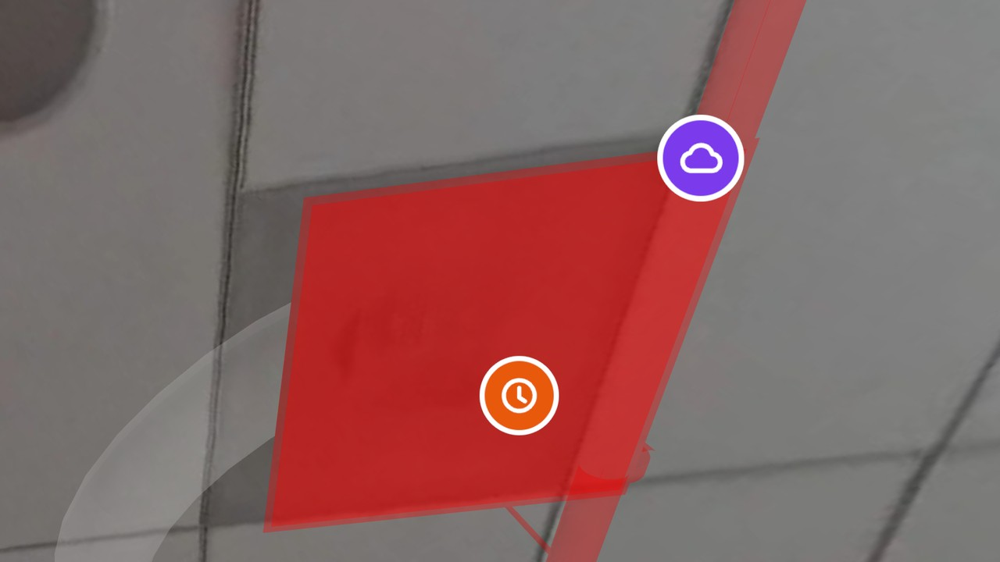
CO₂ · 839 ppmSIM
Comfort · +2.4 °CSIM
“This room is warm 9–5 every weekday. Likely cause, and where do I check first?”
ANSWER
Likely VAV box 400766 is capped: CO₂ doubles at 9, but its damper stops near 72 %. Check first: its maximum-airflow setting.
How it works: ask, Claude checks the twin, you hear it
Interior Digital Twin · Lab meeting · Nov 5, 2026
8
AI · CONCEPT
1Viewer
Point at an element and hold the trigger; speak, then release. Laptop: type or talk.
2Claude
Through the Anthropic API. Picks which twin tools to call.
3Twin tools
7 read-only tools over 66,769 BIM elements; cited IDs checked.
4Back to you
Two short spoken sentences, and a card next to the element.
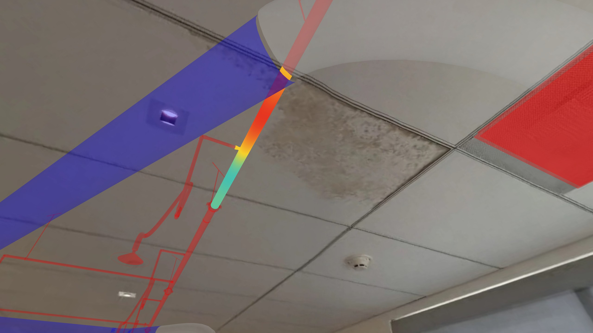
Spiral duct · 401514
Sprinkler line · 276994
ClaudeREAD ALOUD
Above this tile: 75 elements. Closest: spiral duct 401514, 0.1 m up; sprinkler line 276994, 1.0 m up.
In view next to the tile you point at · mockup
MOCKUP OF THE HEADSET VIEW
Claude
What’s above this ceiling tile, within 2 m?
TOOLSelements_near
75 elements, mostly duct. Closest: spiral duct 401514, 0.1 m above the tile.
401514276994 checked against the index
HOW THE ANSWER REACHES YOU
Spoken two short sentences in the laptop voice; IDs stay on the card
In view a card next to the element, with “Thinking…” and each step while it works
Ask by voice speech-to-text runs locally on the laptop
Ran on the Quest 3 (scripted) · hold-to-ask: Mac only so far
Demo, level 3: where does this air come from?
Interior Digital Twin · Lab meeting · Nov 5, 2026
9
AI · CONCEPT
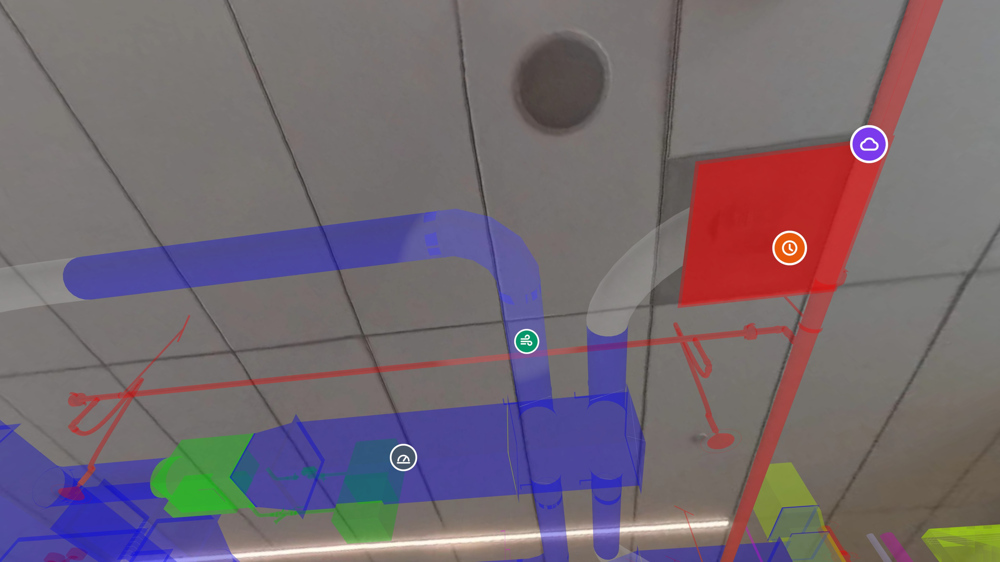
Supply diffuser · 388279
VAV box with reheat · 400766
Duct run · inferred from touching geometry
LISTENING…
“Where does the air from this vent come from?”
ClaudeREAD ALOUD
From VAV box 400766, about 3 m away in the ceiling space: 11 steps along the ducts.
Inferred from touching ducts · not a verified connection
Click or press → to step · 0 / 4
SIMULATED DEMO
Claude
Waiting for a question from the viewer…
From the viewer · pointing at 388279
Where does the air from this vent come from?
2 TOOL CALLSget_element · connected_run
Most likely from VAV box 400766, a box with a hot-water reheat coil, about 3 m away in the ceiling space. The air reaches this vent through 10 duct pieces.
To check it on siteopen the ceiling near the box; the duct link is inferred, so confirm it there.
400766388279Link inferred from touching ducts · confirm on site
Read aloud in the headset
Card next to the diffuser
1Point2Ask3Trace the duct run4Answer, read aloud
Level 4: why is this room warm from 9 to 5?
Interior Digital Twin · Lab meeting · Nov 5, 2026
10
AI · CONCEPT
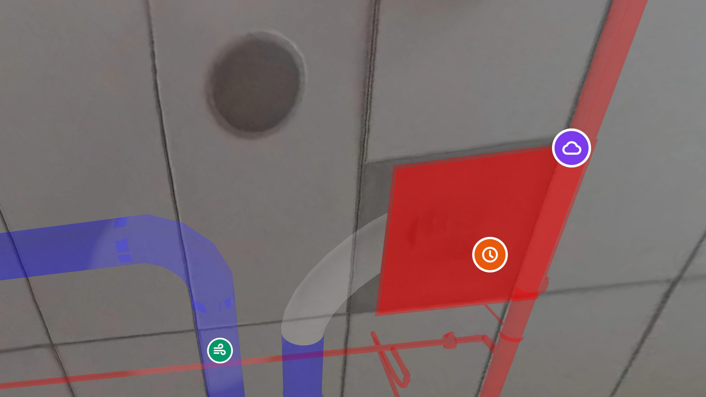
Supply diffuser · 388279
CO₂ · 839 ppmSIM
Comfort · +2.4 °CSIM
LISTENING…
“This room is warm from 9 to 5 every weekday. Likely cause, and where do I check first?”
ClaudeREAD ALOUD
Likely VAV box 400766 is capped by its maximum-airflow setting: CO₂ doubles at 9, but the damper never opens fully.
Simulated sensors · one day at this diffuser
Click or press → to step · 0 / 4
SIMULATED DEMO
Claude
Waiting for a question from the viewer…
From the viewer · pointing at 388279
This room is warm from 9 to 5 every weekday. Likely cause, and where do I check first?
Likely VAV box 400766 is capped by its maximum-airflow setting.
Check firstthe box’s max-airflow setting, then damper command against position.
400766388279401200Confidence: medium (simulated trends, inferred run)
Cannot tell yet sun and windows · true duct connections · real readings (all simulated)
1Point2Ask3Claude reads the trends4Answer with a chart
Sensors appear where they are in the building
Interior Digital Twin · Lab meeting · Nov 5, 2026
11
SENSOR
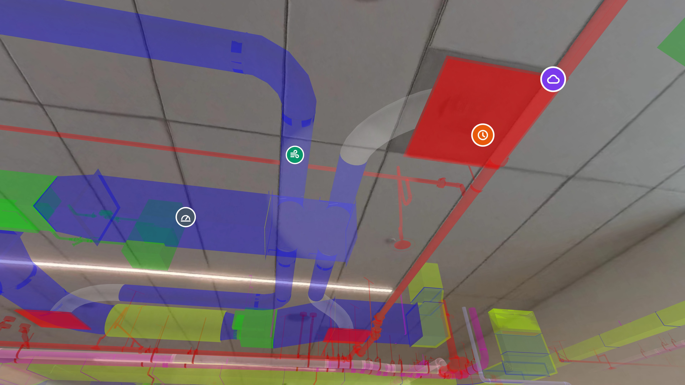
CO₂ · 839 ppmSIM
Comfort · +2.4 °CSIM
Airflow · 426 CFMSIM
Damper · 71 % openSIM
Four demo sensors on the Level 1 supply ducts, each drawn on its BIM element. Simulated values; desktop preview of /mr.
17
demo sensors, each tied to a real BIM element ID SIMULATED
IN THIS VIEW · ON ELEMENT
CO₂ / temperature / humidity388279
Comfort (above setpoint)388279
Airflow + supply-air temperature401233
Damper position (from BAS)401200
Five scenarios: leak, air, water, power, rotating equipment
Real data next: SkySpark access pending with Facilities; first field install being planned
Next two weeks
Interior Digital Twin · Lab meeting · Nov 5, 2026
12
SCAN
1Review the 219-photo set
2Build the Level 2 and Level 3 models
BIM · MR
1First on-site Quest test at Grimes, with the stickers; try the VR overlay on the Quest 3
2Ask the twin: already in the headset with scripted answers; next, a live API key and the on-site test
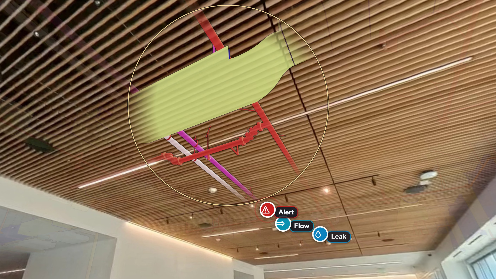
SENSOR
1SkySpark access with Facilities
2Plan the first field install
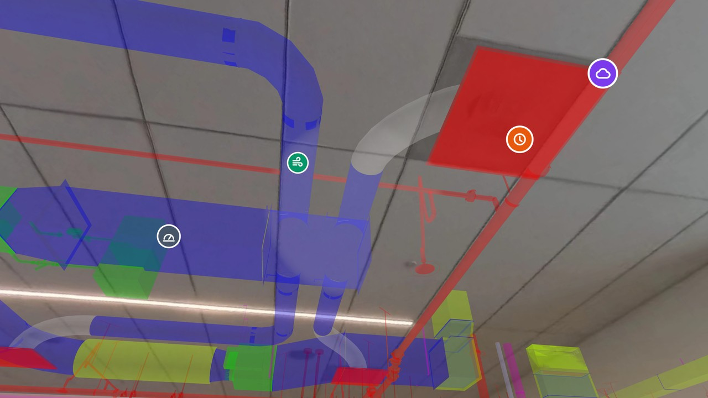
Asks
Interior Digital Twin · Lab meeting · Nov 5, 2026
13
1
QR stickers on Level 1
Permission to put the six stickers on Grimes Level 1 walls: removable, up only for the test.
2
Facilities questions
Which questions would Facilities really ask on site, and at which level should the twin get good first?
1Look up: what is this, which room?
2Nearby: what is above this tile?
3Trace: where does this air come from?
4Reason: why is it warm 9–5?
3
SkySpark intake
Help with the Facilities intake for SkySpark data access: real trends would replace the simulated ones.
Thank you · questions welcome
Backup: how the AI sits behind the web page
Interior Digital Twin · Lab meeting · Nov 5, 2026
14
AI · CONCEPT
Prototype — laptop server
HEADSET
Quest 3 web browser
The twin page (WebXR): BIM over the room, pointing, microphone
Sends the question and the ID of the element you point at
Shows the answer card next to the element and plays the voice
LAPTOP · SAME WI-FI
Ask-the-twin server
Speech to text runs here (Whisper, local)
7 read-only tools over 66,769 BIM elements and the demo sensors
Checks every cited ID against what the tools returned
Holds the API key; reachable only on our Wi-Fi (HTTPS)
CLOUD
Claude (Anthropic API)
Reads the question, decides which tools to call, up to 8 rounds
Sees only the question, the element and the tool results
Writes the short answer that comes back as card and voice
question + element ID
answer card + voice
question + tool results
tool calls + answer
Why a server on the laptop?
A public web page cannot keep an API key secret. The laptop keeps the key and the twin tools; the headset page only talks to it. Status (Nov 5): worked on the Quest 3 over our Wi-Fi with scripted answers. Live Claude answers need the key on the laptop; next, the public page will call the laptop for the AI part only.
←/→ slides (slides 9 and 10 step through their demos) · F fullscreen · N notes